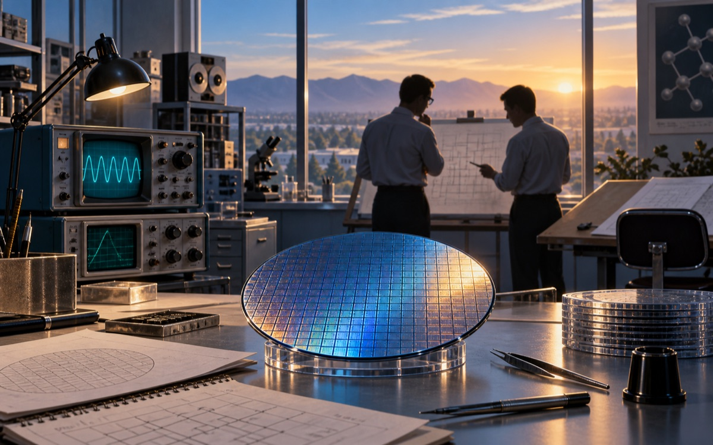
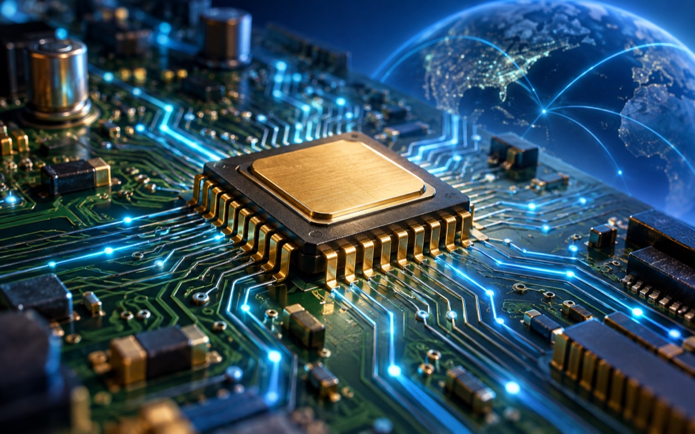
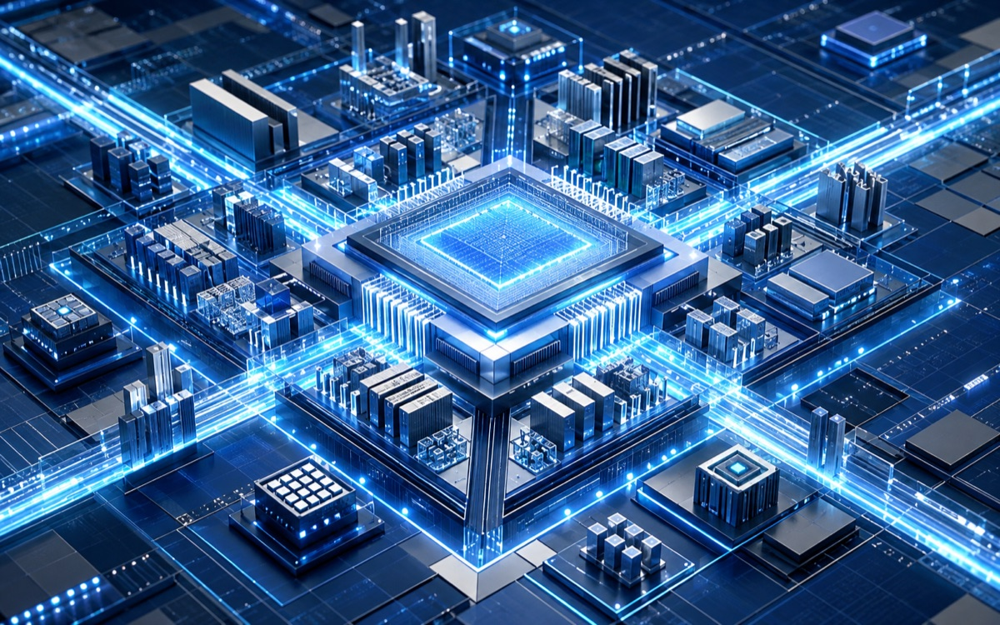
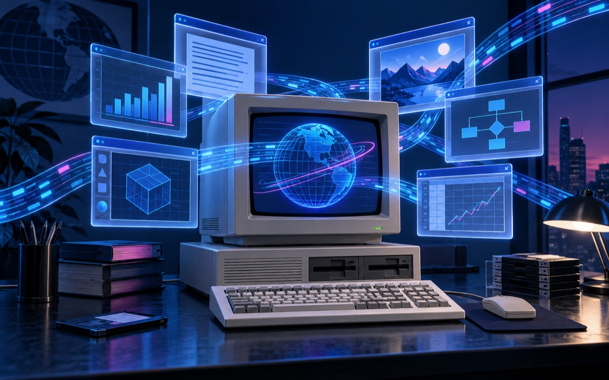
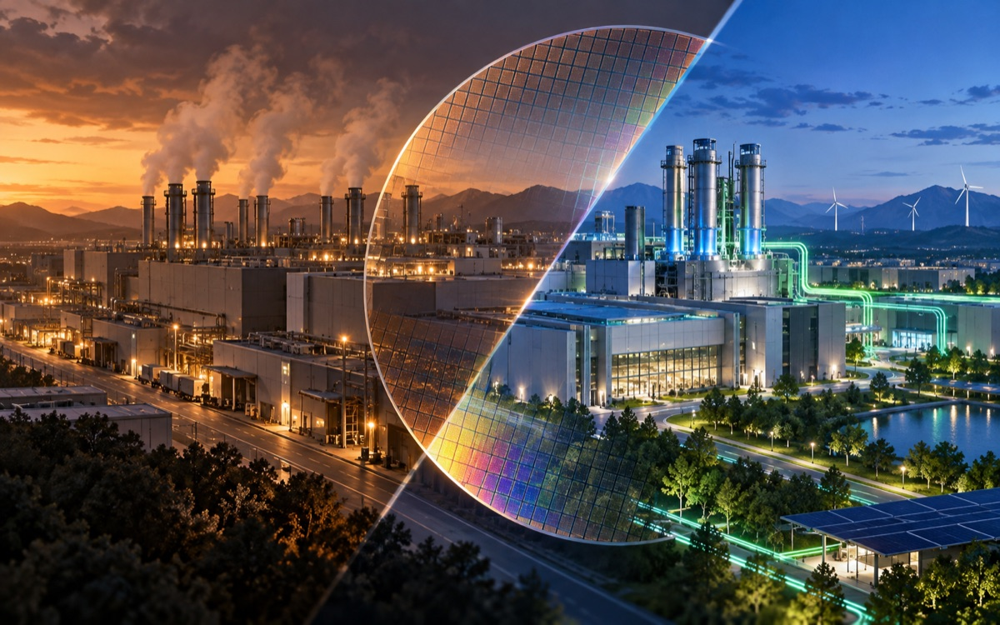
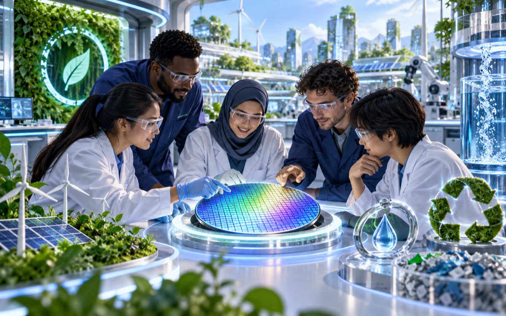
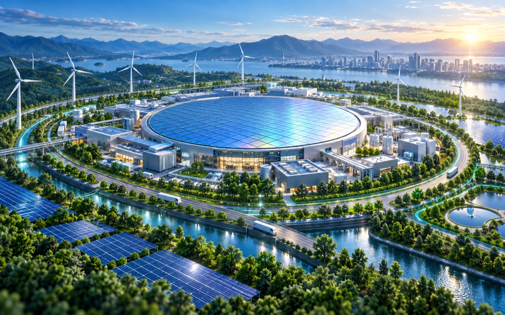
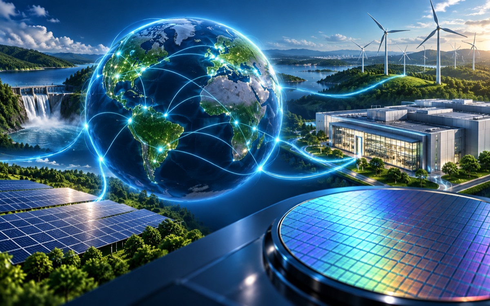
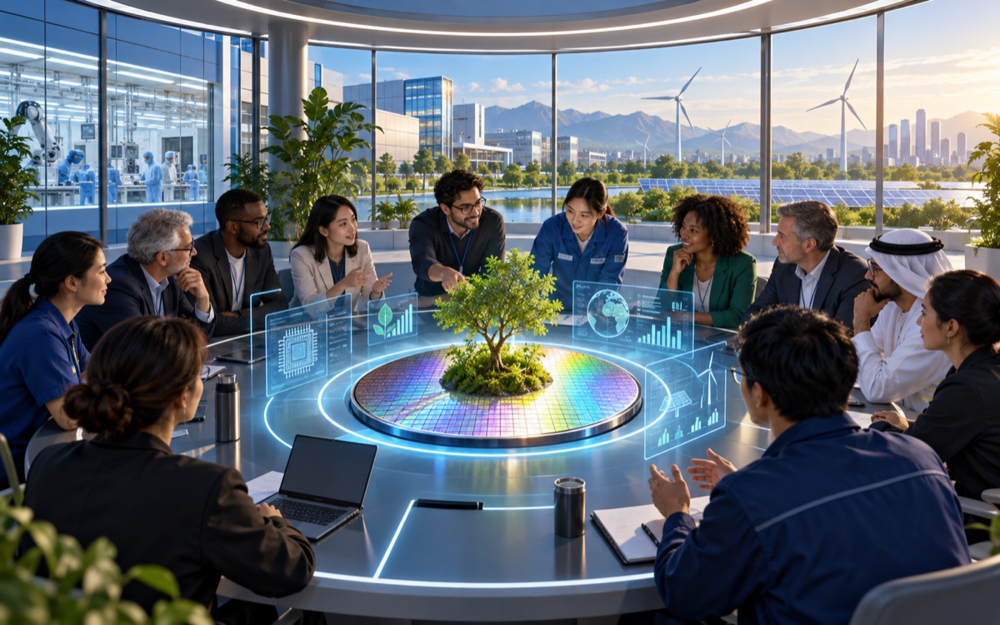

011968
Intel Founded
The foundation of an innovation era
Robert Noyce and Gordon Moore rename the newly formed company NM Electronics to Intel Corporation, laying the foundation for decades of technological innovation.
Innovation with purpose
Explore how decades of semiconductor innovation grew into a broader commitment to climate action, renewable electricity, responsible manufacturing, and collective progress.
Start the timelineA journey of progress
On a larger screen, scroll sideways and hover over a card. On touch devices, the timeline stacks vertically - tap a card's button to reveal the story.

011968
The foundation of an innovation era
Robert Noyce and Gordon Moore rename the newly formed company NM Electronics to Intel Corporation, laying the foundation for decades of technological innovation.

021971
Computing power moves onto one chip
Intel debuts the 4004, the world's first commercial microprocessor, igniting the microprocessor revolution and propelling the future of computing devices.

031978
A lasting architecture takes shape
Launch of the 8086 processor establishes the x86 architecture that drives countless PCs and servers in the modern era.

041985
Performance enters a 32-bit era
Intel introduces the 386 processor with 32-bit architecture, ushering in a new era of performance and multitasking for personal computers.

052006
A challenge becomes a turning point
This year marks Intel's highest annual operational greenhouse gas emissions. Intel later invests in chemical abatement, renewable energy, and efficient manufacturing to reverse the trend.

062020
Responsibility scales with innovation
Intel launches its RISE strategy and 2030 goals, aiming to drive industry-wide progress on climate action, water stewardship, and waste reduction.

072022
A global operational commitment
Intel announces its commitment to achieve net-zero Scope 1 and 2 greenhouse gas emissions across global operations by 2040.

082023
Clean power reaches a global scale
The company achieves 99% renewable electricity usage worldwide, lowering operational carbon emissions and advancing long-term sustainability goals.

092024
Progress becomes a shared mission
Intel hosts its first Sustainability Summit, bringing suppliers, government officials, and industry leaders together to advance sustainable semiconductor manufacturing.
The work continues
Innovation is not only about what technology can do - it is also about how responsibly it is made and how widely its benefits are shared.
Revisit the milestones